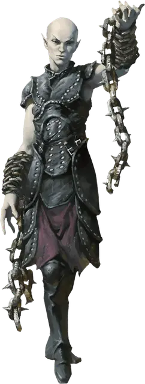

Шадар-кай теневой танцор
Shadar-kai Shadow Dancer
Средний Гуманоид (Эльф), любое мировоззрение

Класс Доспеха 15 (проклёпанный кожаный доспех)
Хиты 71 (13к8 + 13)
Скорость 30 футов
| мод | спас | ||
|---|---|---|---|
| СИЛ | 12 | +1 | +1 |
| ЛОВ | 16 | +3 | +6 |
| ТЕЛ | 13 | +1 | +4 |
| мод | спас | ||
|---|---|---|---|
| ИНТ | 11 | +0 | +0 |
| МДР | 12 | +1 | +1 |
| ХАР | 12 | +1 | +1 |
Навыки Скрытность +6
Сопротивление урону некротическая энергия
Иммунитет к состояниям очарование, истощение
Чувства тёмное зрение 60 футов, пассивное Восприятие 11
Языки Общий, Эльфийский
Опасность 7 (2900 опыта)
Бонус мастерства +3
Среда обитания Город, Лес, Подземье
Особенности
Наследие фей. Теневой танцор совершает с преимуществом спасброски от очарования, и магия не может его усыпить.
Действия
Мультиатака. Теневой танцор совершает три атаки Цепью с шипами. Он может заменить одну из этих атак Теневым прыжком.
Цепь с шипами. Рукопашная атака оружием: +6 к попаданию, досягаемость 10 фт., одна цель. Попадание: 10 (2к6 + 3) колющего урона, и цель должна преуспеть в спасброске Ловкости Сл 14. В противном случае она пострадает от одного из следующих эффектов (выберите один или бросьте к6):
• 1–2. Распад. Цель получает 22 (4к10) урона некротической энергией;
• 3–4. Захват. Цель становится схваченной (Сл высвобождения 14), если она Среднего размера или меньше. До окончания захвата, цель считается опутаной и теневой танцор не может схватить другую цель;
• 5–6. Опрокидывание. Цель сбивается с ног.
Бонусные действия
Теневой прыжок. Теневой танцор бонусным действием может телепортироваться на расстояние до 30 фт. в свободное пространство, которое он может видеть. Обе точки телепортации должны находиться в тусклом свете или во тьме.
Описание
Те, кто сражался с теневыми танцорами, описывают это, как борьбу с живой тьмой. Каждая тусклая ниша и затенённый угол – это место, откуда могут появиться гибкие и акробатичные теневые танцоры, чтобы напасть на свою добычу. Используя подобную тактику, они нападаю на своих врагов со всех сторон, используя шквал запутывающих цепей, что крепко держат и разъедают плоть. Когда их жертва беспомощна, приближаются другие и убивают её. Затем, они ищут у уже погибшей жертвы различные безделушки, всё, что посчитают ярким и красочным по возвращению в своё мрачное Царство Теней.
Шадар-кай
В вечном мраке сумрака живут шадар-каи, эльфы, прислуживающее Королеве Воронов. Они были принесены в это тёмное царство в прошлые века так давно, что теперь они идеально адаптировались к этой угрюмой среде, как физически, так и умственно.
Эоны воздействия изнурительной среды обитания Царства Теней сделали их печальными и угрюмыми созданиями. В этом измерении, они имеют вид высохших эльфов: светлые волосы, морщинистая серая кожа и опухшие суставы дают им трупоподобный внешний вид. Они выглядят более молодыми в других планах, но их кожа всегда сохраняет свою мертвецкую бледноту. Они надевают тёмные плащи и тяжёлые маски, ненавидят зеркала и избегают тех вещей, что напоминают им о собственном возрасте.
Шадар-каи наблюдает за Царством Теней и Материальным планом, разыскивая души и трагические события, которые могут порадовать их божество. По слухам, они способны повлиять на мировые события трагическим образом ради её удовольствия. Тем не менее, королева Ворона представляет загадку даже для своих самых преданных последователей. Усилия шадар-кай вознаграждаются только неопределёнными предзнаменованиями, которые они интерпретируют, как только могут.
Крепость воспоминаний
Шадар-каи, наиболее преданные Королеве Воронов, служат ей в Крепости Воспоминаний, её искаженном замке в Царстве Теней. Эта крепость – весьма мрачное место, заполненное непрекращающимся эхом прошлого. Стаи воронов, что служат её глазами и ушами, затмевают небеса вокруг крепости, залетая внутрь неё, и передают ей зашифрованные сообщения и знамения из всей мультивселенной.
В Крепости Воспоминаний имеется множество безделушек и предметов, которые Королева Воронов считает неотразимыми, а также обрывки человеческих воспоминаний о прошлом, содержащие в себе глубокие чувства боли, горя, тоски, вины или раскаяния. Эти безделушки могут включать в себя мебель, часы, зеркала, драгоценности и игрушки. Также в крепости обитают призрачные видения людей, мест и домашних животных. Любая из этих вещей может незамедлительно дать информацию о ней, а каждый объект или явление может в переносном смысле стать изложением какой-либо истории (большой или маленькой), что насыщена острыми эмоциями.
Шадар-каи, встреченные за пределами Царства Теней, часто отправляются на поиски предметов, наиболее тронутых скорбью, которые они могут найти, чтобы вернуть в мрачный замок своей королевы.